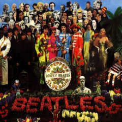

Guaranteed to raise a smile ...

Jeremy responded to my recent suggestion that Google may use advertising to fund the Google Music Store with this:
Can you picture it now.. short little audio excerpts overdubbed onto your song, based on the relevance of the lyrics:
It was twenty years ago today
Sergeant Pepper [buy Lowry's seasonings] taught the band to play
They've been going in and out of style
[Try Old Navy for all your fashion needs]
But they're guaranteed to raise a smile
[Crest keeps your smile bright!]
So may I introduce to you
The act you've known for all these years:
Sergeant Pepper's Lonely [Sign up with Match.com] Hearts Club Band
Sergeant Pepper [buy Lowry's seasonings] taught the band to play
They've been going in and out of style
[Try Old Navy for all your fashion needs]
But they're guaranteed to raise a smile
[Crest keeps your smile bright!]
So may I introduce to you
The act you've known for all these years:
Sergeant Pepper's Lonely [Sign up with Match.com] Hearts Club Band